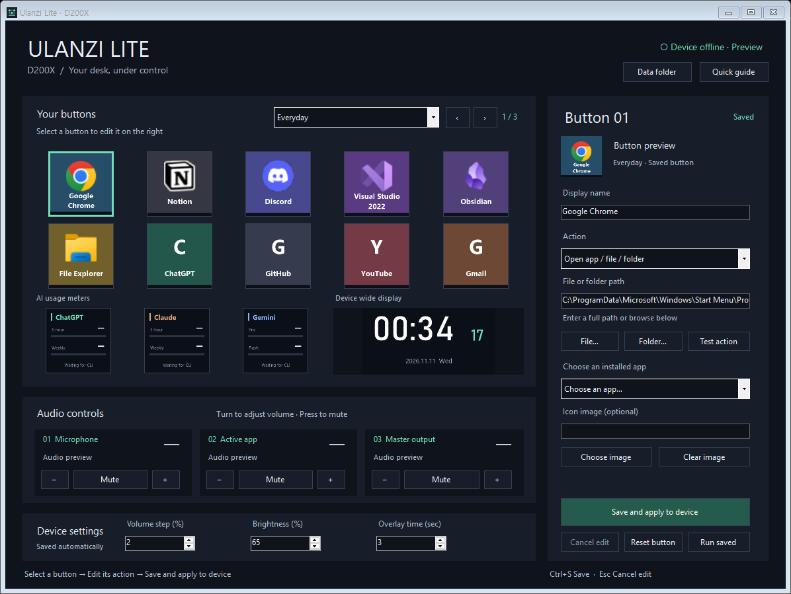

A button for your next move.
Open apps, websites, files, and folders. Ten editable buttons across three pages give your everyday tools a dedicated place.
Automatic website icons ↗
BUILT FOR ULANZI D200X
Your favorite shortcuts, your sound, and your AI usage. Bring them together with a lightweight Windows companion for your D200X.
v0.3.0 preview · Windows 10/11 x64 · Portable .exe
A little more control. A lot less overhead.
Illustrative layout · Configure your own shortcuts
A SMALL APP. A BETTER DESK.
Give your D200X a focused everyday job. Get to what matters with a button press or a turn of a knob.
Open apps, websites, files, and folders. Ten editable buttons across three pages give your everyday tools a dedicated place.
Three knobs for your microphone, active app, and master output. Turn to adjust. Press to mute. Your wide display shows the change.
Keep Codex, Claude, and Gemini CLI usage visible on three dedicated meters, using your existing CLI sign-ins.
Understand the usage sources ↗MAKE IT YOURS
Pick a button, choose an action, and save. See your changes in the preview before sending them to your device.

FROM DOWNLOAD TO DESK
No installer. No account for the app.
Just a writable folder and your D200X.
Windows 10/11 x64 · .NET Framework 4.5+
Save the executable in a writable folder. If you use a ZIP package, extract it first.
Quit Ulanzi Studio, including its tray process, then connect with a USB data cable.
Run the app from File Explorer. Select a button, edit its action, and choose “Save and apply to device”.
Quit Studio before using Lite. Lite talks to the D200X directly over USB. It does not modify firmware or Studio configuration files. To restore your Studio display, quit Lite and reapply your profile in Studio.
ChatGPT shows Codex CLI limits from local logs. Claude shows account limits using its CLI login. Gemini shows CLI Pro/Flash quotas. These can differ from web subscription limits. Missing readings show a status instead of an estimated percentage.
Settings and icon caches stay beside the executable. There is no telemetry. Claude and Gemini checks contact their providers using existing CLI credentials; Codex reads local logs. Website icons are fetched from the relevant sites. Tokens and conversations are not saved in app logs.
Yes. You can edit and save your configuration offline. The saved page is applied when your D200X connects. Closing the window keeps Lite running in the tray; choose Exit from the tray menu to quit.
No. Ulanzi Lite is an independent, unofficial project with publicly available source. Version 0.3.0 is a preview, and compatibility may vary by firmware. Contributions and reproducible bug reports are welcome.
BUILT TO STAY LIGHT